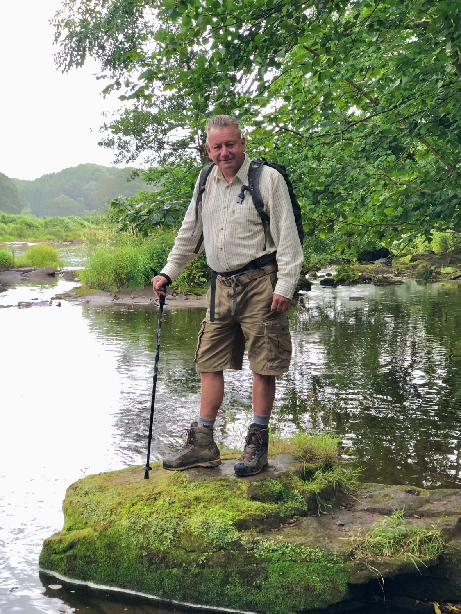

Service
Bluebell Crematorium
Thursday 10th December 2026 3:00 pm
Old London RoadHalstead
Kent
TN14 7AE

A celebration of the life of
1963 – 2026
‘David Rydell quite liked The Clash’
Family and friends are warmly invited to join us to say goodbye to David and celebrate his life. If you plan to attend, please let us know below.
Service
Thursday 10th December 2026 3:00 pm
Old London RoadReception · Wake
Thursday 10th December 2026 following the service
Farnborough WayIf you would like to attend the funeral and/or the wake, please fill in our short RSVP form, including the names of anyone coming with you.
The funeral and wake are intended mainly for family, close friends and those who shared a personal connection with David. Letting us know helps the Rydell family make sure everyone can be properly accommodated.
Donations in David’s memory are being collected for Kent Wildlife Trust.